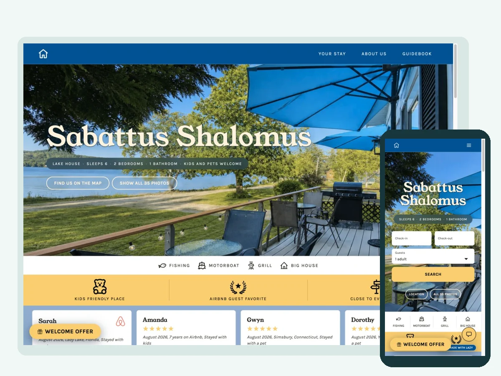
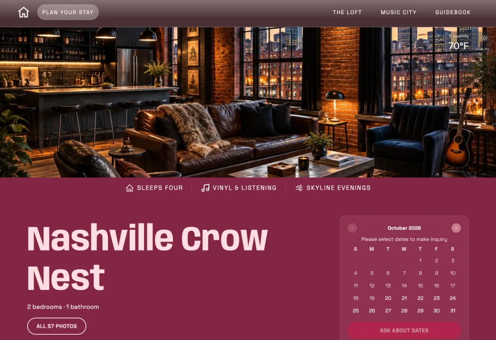
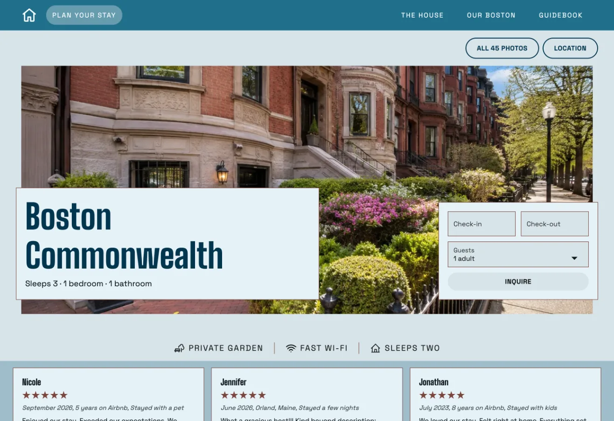
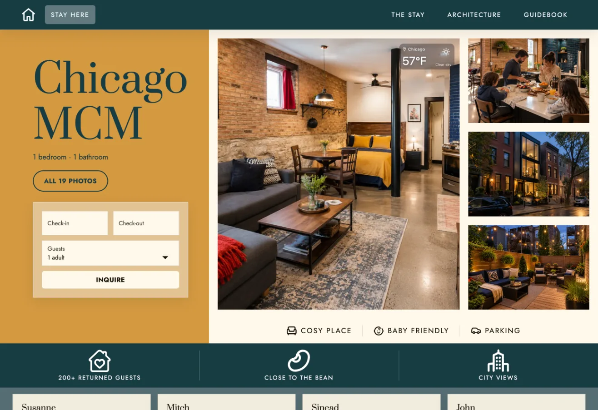
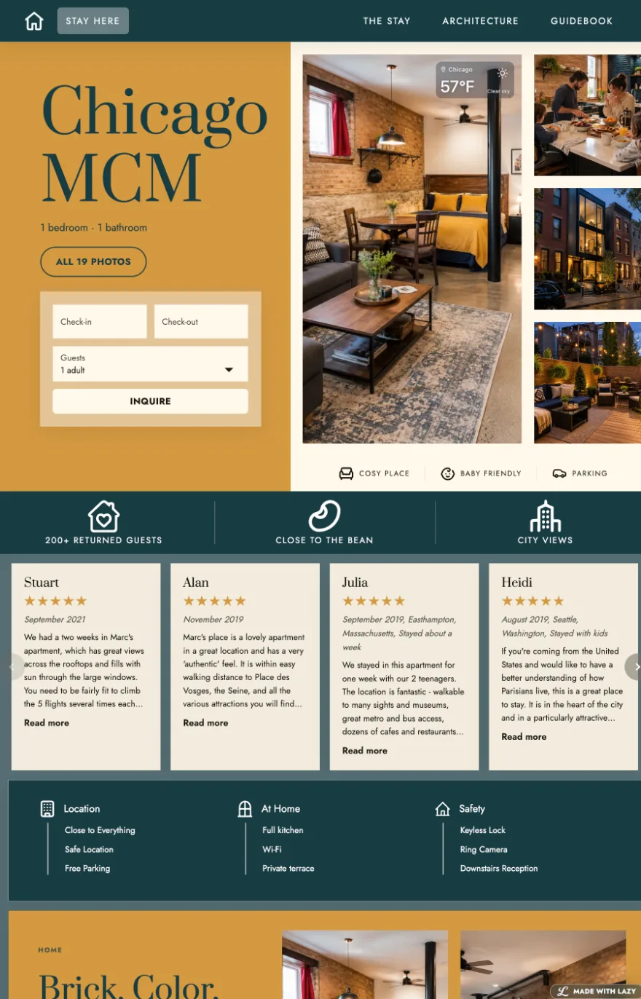
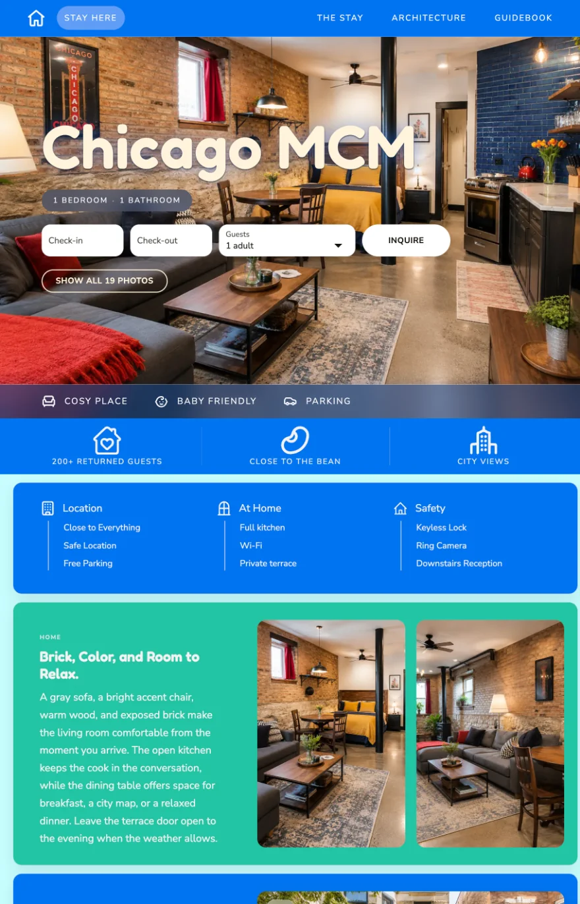
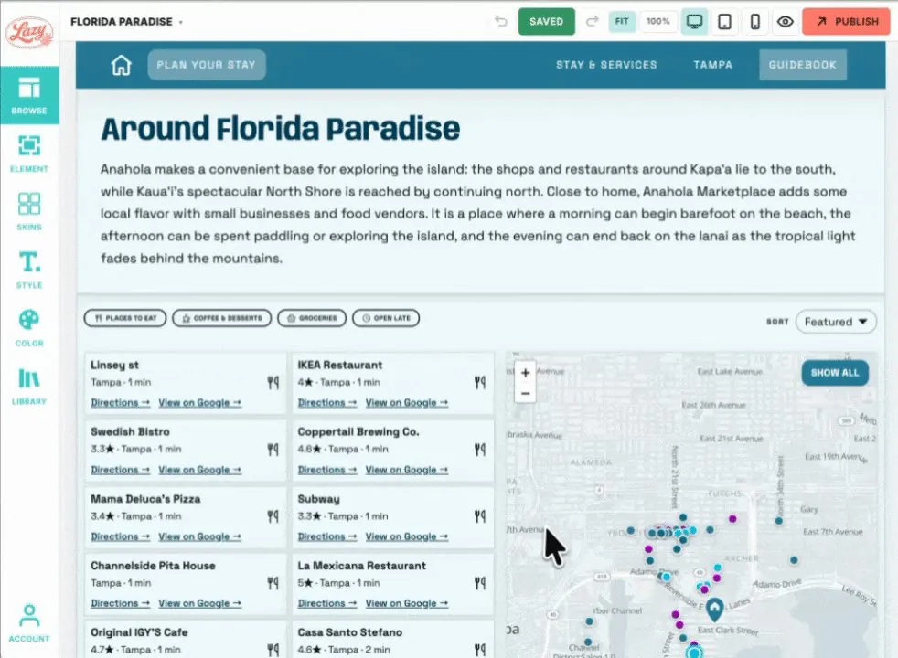
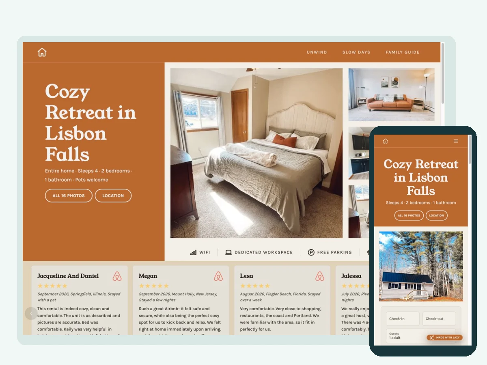

Lazy, websites for hosts
- Role
- Founder, Service and UX Designer
- Scope
- Research, offer, design system, editor
- Highlights
- 6 live websites · 15 demo designs · Built with Claude Code and Codex
What exactly I did
Situation
Hosts rent on Airbnb’s terms
Guests will book direct, but only with a host they trust.
Situation
Hosts rent on Airbnb’s terms
Guests will book direct, but only with a host they trust.
Guests will book direct. Only with a host they trust.
Hosts pay Airbnb in fees, in rules they don’t control, and in looking like every other listing. I host a lake house in Maine; Sabattus Shalomus was the first Lazy site.

“Driving direct bookings” is hosts’ top challenge (Lodgify, 2024). In a survey of 1,204 guests, most would book direct, but a quarter only if they trusted the host. These are vendor surveys, so I read them as direction, not proof.
| Fear | Lazy’s answer |
|---|---|
| “Guests won’t trust it” | Imported Airbnb reviews, a finished design, a guidebook before booking |
| “Payments and chargebacks” | Lazy never takes payments; the host’s platform or Airbnb does |
| “Nobody will find it” | Keep Airbnb for discovery; a free listing on Pleasant Street |
| “Too much tech” | Lazy builds and runs it; the host edits in an editor they can’t break |
Task
A finished website the host can’t break
Build it for the host, connect their booking tools, hand them an editor with guardrails.
Task
A finished website the host can’t break
Build it for the host, connect their booking tools, hand them an editor with guardrails.
A finished website for each house, connected to the booking tools the host already pays for, with an editor that changes everything except the design rules. Every site gets a booking button, whatever the host uses, and it never breaks: if a mode is missing what it needs, it falls back to Inquiry.
| Mode | What the guest does | What the host needs |
|---|---|---|
| Booking | Books in the platform’s widget, on the site | Lodgify, Hospitable, Guesty, OwnerRez or similar |
| Platform | Opens the listing and books there | Airbnb, Vrbo or Booking.com |
| Inquiry | Picks dates and sends a request | Nothing. Always on |
Action
One house became a system
Wireframes, seven first screens, one-click skins, and an editor drawn on the real site.
Action
One house became a system
Wireframes, seven first screens, one-click skins, and an editor drawn on the real site.
From one house to a system
I wireframed my own house two ways. Every block got a name and a job, and those blocks became the sections every Lazy site is built from.


Seven first screens






One click, a different house
A theme is colors. A skin is design plus colors, and never content, so the host’s words and photos stay put. Drag to compare.


An editor you can’t break
Hosts edit like a blog post, not like Wix. The editor draws the real site at real phone, tablet and desktop widths; an empty field stays empty, never filled with made-up reviews.


Built with AI, by the rules
I designed the product and built the front end with Claude Code and Codex; a backend developer runs the servers. The rules came first and every session follows them: the owner’s words are the scope, reuse what already does the job, and never invent a fact about a real house.
Result
Live, and growing
Open websiteSix real homes on Lazy, and a free map of independent homes.
Result
Live, and growing
Six real homes on Lazy, and a free map of independent homes.
Lazy launched on October 12, 2026. Sabattus, at the top of this page, was the first site; these five followed.



A website alone doesn’t bring guests. Lazy’s answer is Pleasant Street, a free map of independent homes that book direct.
Lessons learned
What this project taught me
Three rules I start every project with.
Lessons learned
What this project taught me
Three rules I start every project with.
Hosts didn’t need a prettier site; they needed guests to trust it.
A third bedroom that isn’t there is a refund and a bad review.
AI agents stay consistent when the rules are written down.